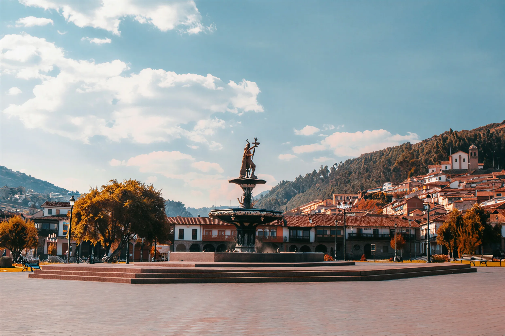
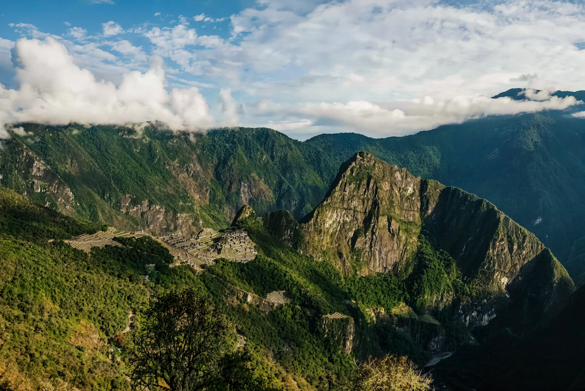
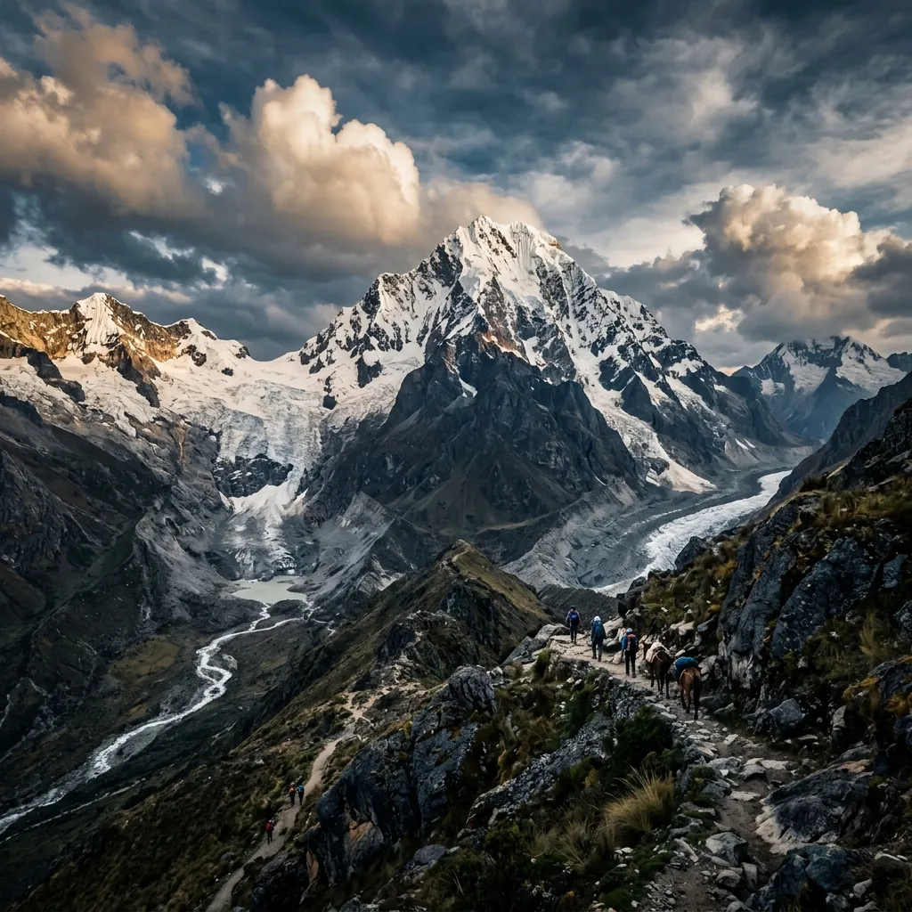
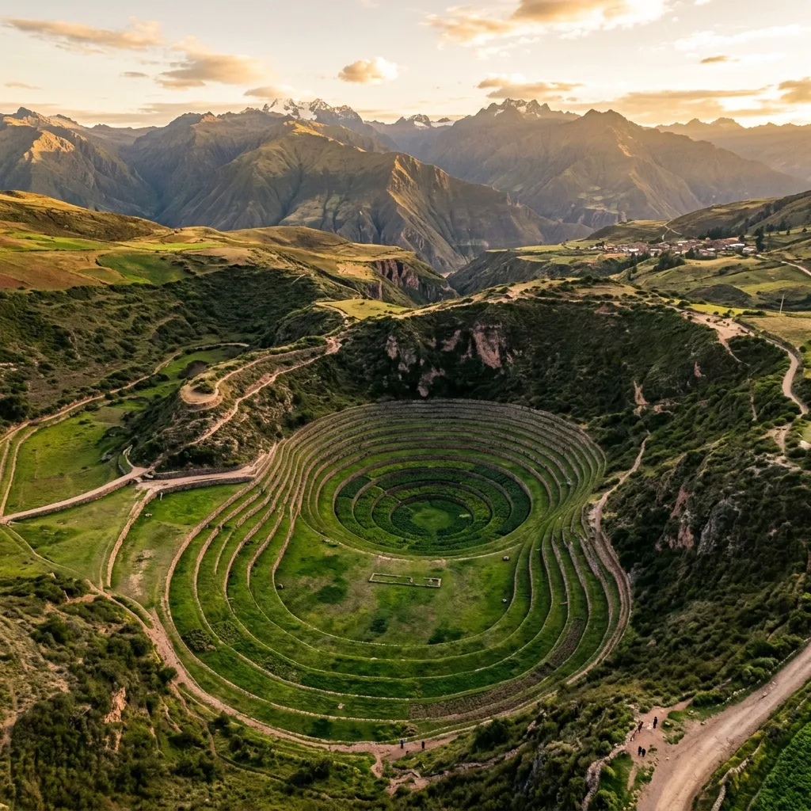
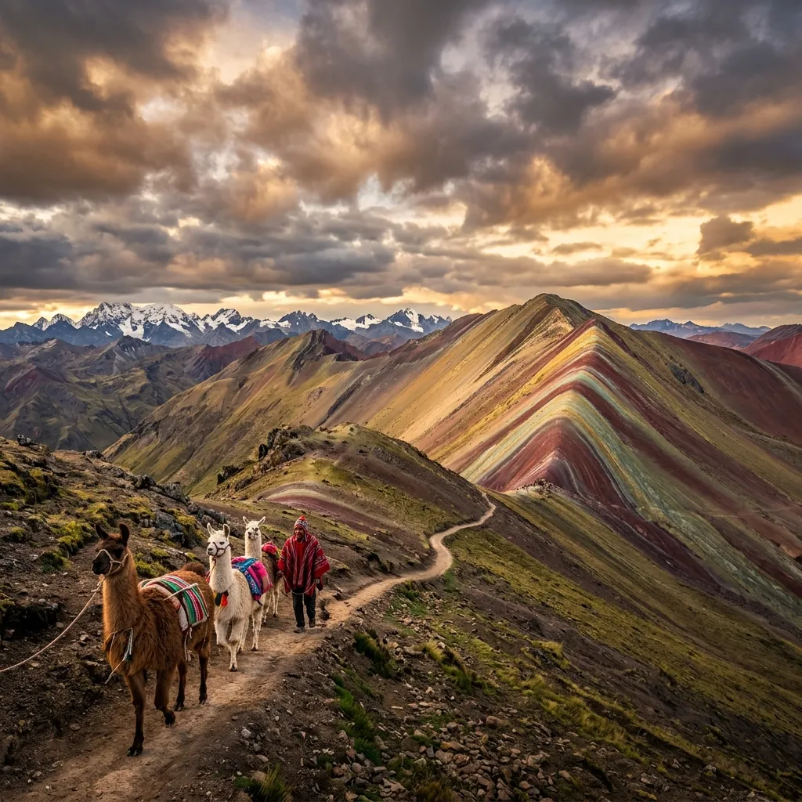
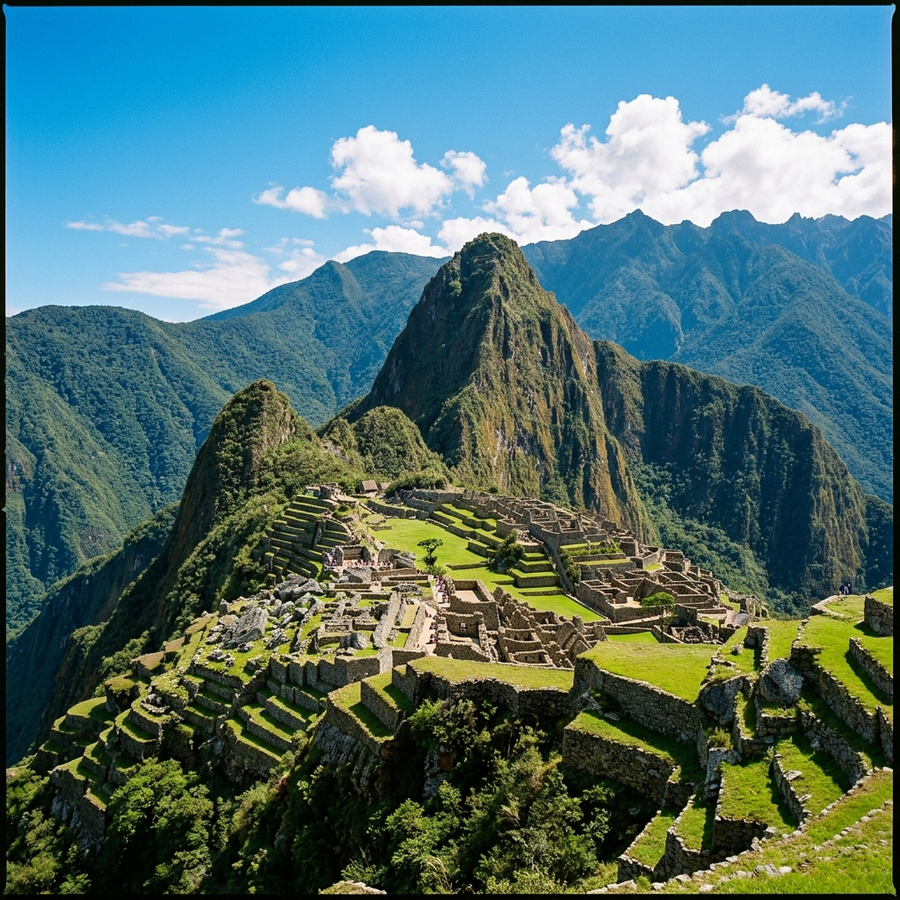
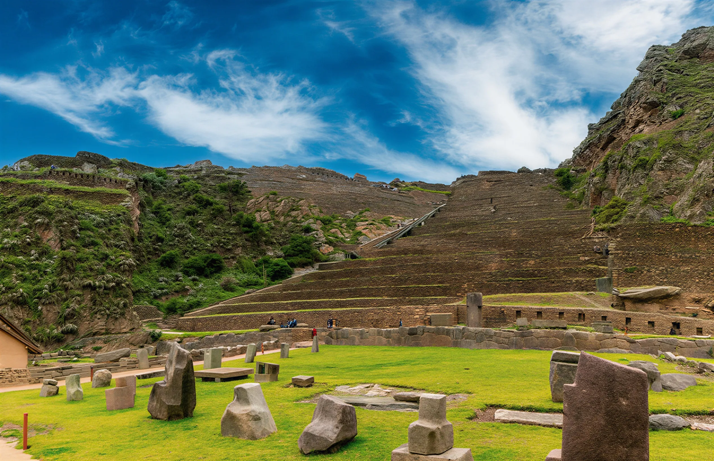
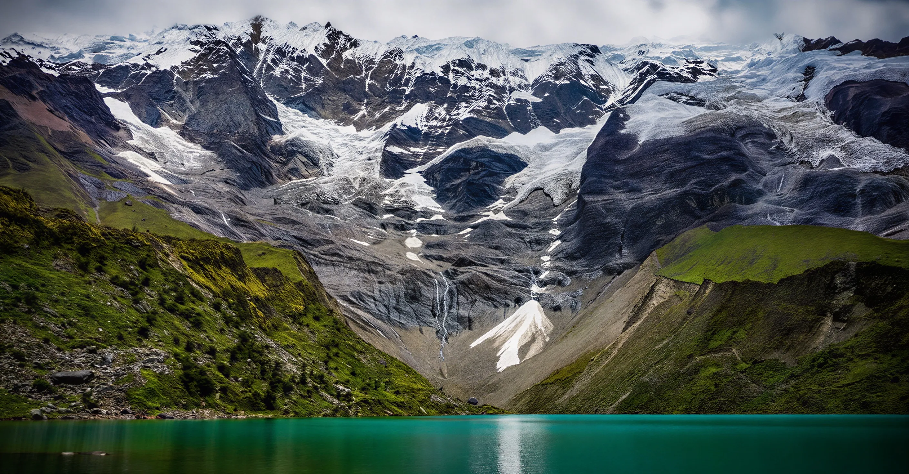
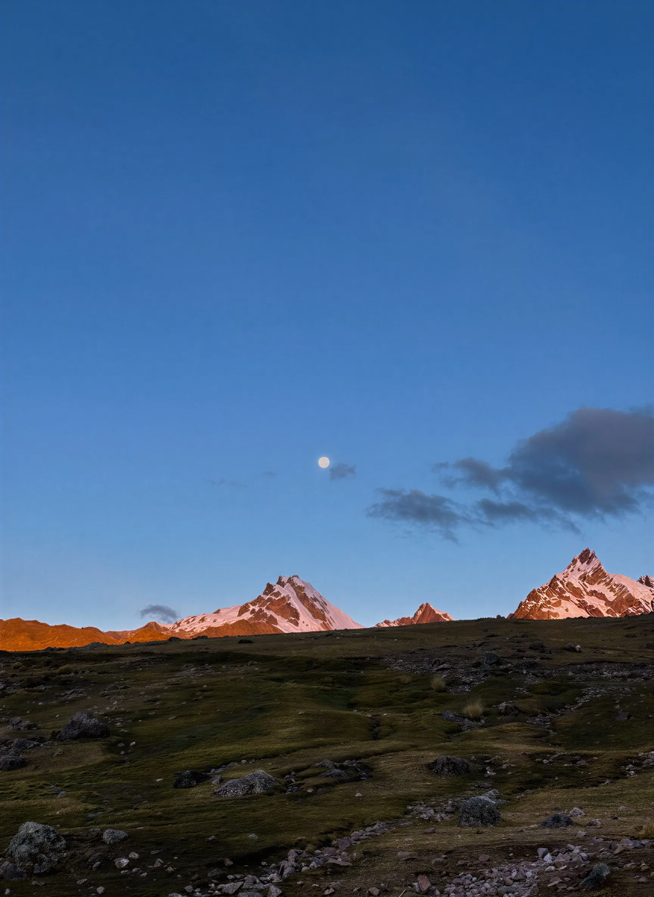

🏅 Top

City Tour Cusco
Cusco → Sacsayhuamán → Qenqo → Puca Pucara → Tambomachay
Cusco is not simply a city — it is a living museum built upon Inca foundations.
Authentic trekking adventures through the heart of the Andes.
Salkantay Trek, Inca Trail, Rainbow Mountain & beyond — certified bilingual guides, small groups.
Deep immersion in Quechua culture and remote landscapes of the Andes.
We guarantee global safety standards and certified expert guides.
We actively and directly support local high-Andean communities.
Discover the most stunning and history-rich regions of the Peruvian Andes. Immersive adventures designed to inspire.






Cusco → Sacsayhuamán → Qenqo → Puca Pucara → Tambomachay
Cusco is not simply a city — it is a living museum built upon Inca foundations.

Chinchero → Moray → Salineras de Maras → Urubamba → Ollantaytambo → Pisac
The Sacred Valley of the Incas hides more secrets than most travelers get to see. We have designed the "Super Valley" for those who want it all in one fully immersive day.

Cusco → Mollepata → Soraypampa → Laguna Humantay
Nestled beneath the glaciers of the Humantay and Salkantay mountains, Humantay Lake is one of nature's most perfectly composed landscapes.

Cusco → Pacchanta → 7 Lagunas → Aguas Termales → Cusco
The Ausangate massif — the highest and most sacred mountain in the Cusco region at 6,384m — harbors a world of extraordinary colored lakes.
We believe every journey should be authentic, responsible, and transformative.
Every guide is officially certified and bilingual. They don't just lead the trail — they bring it to life with deep knowledge of Andean culture, geology, and Inca history.
We cap our groups at 16 passengers for a reason. Smaller groups mean better guidance, safer mountain experiences, and genuine connection with the landscapes you cross.
We actively give back to local communities, support Quechua families, and protect the Andean ecosystems that make these experiences possible.
First aid kits, supplemental oxygen, satellite phones on Inca Trail, walkie-talkies, and 24/7 support. We take every precaution so you can focus on the adventure.
Inca Trail permits sell out 4–6 months in advance. Our team handles all bookings, paperwork, and registrations so you don't have to navigate the system alone.
From the moment you enquire to the moment you return to Cusco, our team is available via WhatsApp and phone. Real people. Real answers. Every step of the way.
"We did the Salkantay Trek with Cusco Pathways and it was an experience we will never forget. The guides, the food, the campsites... everything was top-notch."
"We took the Sacred Valley VIP tour and it far exceeded our expectations. The organization was flawless from start to finish, and we successfully avoided the crowds."
"An unreal, movie-like landscape. Our guide was super patient since I struggled a bit with the altitude. Breakfast and lunch were a real luxury."
"I was recommended this agency and they did not disappoint. They hold an extremely high standard of quality. We did the City Tour and they taught us things that aren't in the books."
"Ausangate is another planet, but traveling with an agency that takes care of every detail makes all the difference. We ended in the hot springs with a spectacular view."
"We are not usually tour people, but the Inca Trail has to be done this way. The respect they show for local culture and their staff is admirable."